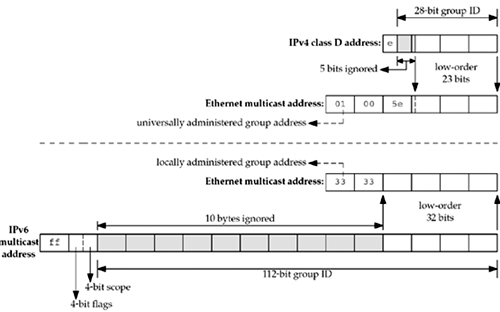
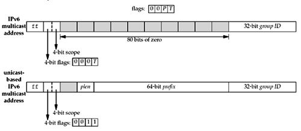
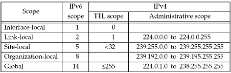

| [ Team LiB ] |
|
21.2 Multicast AddressesWhen describing multicast addresses, we must distinguish between IPv4 and IPv6. IPv4 Class D AddressesClass D addresses, in the range 224.0.0.0 through 239.255.255.255, are the multicast addresses in IPv4 (Figure A.3). The low-order 28 bits of a class D address form the multicast group ID and the 32-bit address is called the group address. Figure 21.1 shows how IP multicast addresses are mapped into Ethernet multicast addresses. This mapping for IPv4 multicast addresses is described in RFC 1112 [Deering 1989] for Ethernets, in RFC 1390 [Katz 1993] for FDDI networks, and in RFC 1469 [Pusateri 1993] for token-ring networks. We also show the mapping for IPv6 multicast addresses to allow easy comparison of the resulting Ethernet addresses. Figure 21.1. Mapping of IPv4 and IPv6 multicast address to Ethernet addresses. Considering just the IPv4 mapping, the high-order 24 bits of the Ethernet address are always 01:00:5e. The next bit is always 0, and the low-order 23 bits are copied from the low-order 23 bits of the multicast group address. The high-order 5 bits of the group address are ignored in the mapping. This means that 32 multicast addresses map to a single Ethernet address: The mapping is not one-to-one. The low-order 2 bits of the first byte of the Ethernet address identify the address as a universally administered group address. Universally administered means the high-order 24 bits have been assigned by the IEEE and group addresses are recognized and handled specially by receiving interfaces. There are a few special IPv4 multicast addresses:
The range 224.0.0.0 through 224.0.0.255 (which we can also write as 224.0.0.0/24) is called link local. These addresses are reserved for low-level topology discovery or maintenance protocols, and datagrams destined to any of these addresses are never forwarded by a multicast router. We will say more about the scope of various IPv4 multicast addresses after looking at IPv6 multicast addresses. IPv6 Multicast AddressesThe high-order byte of an IPv6 multicast address has the value ff. Figure 21.1 shows the mapping from a 16-byte IPv6 multicast address into a 6-byte Ethernet address. The low-order 32 bits of the group address are copied into the low-order 32 bits of the Ethernet address. The high-order 2 bytes of the Ethernet address are 33:33. This mapping for Ethernets is specified in RFC 2464 [Crawford 1998a], the same mapping for FDDI is in RFC 2467 [Crawford 1998b], and the token-ring mapping is in RFC 2470 [Crawford, Narten, and Thomas 1998]. The low-order two bits of the first byte of the Ethernet address specify the address as a locally administered group address. Locally administered means there is no guarantee that the address is unique to IPv6. There could be other protocol suites besides IPv6 sharing the network and using the same high-order two bytes of the Ethernet address. As we mentioned earlier, group addresses are recognized and handled specially by receiving interfaces. Two formats are defined for IPv6 multicast addresses, as shown in Figure 21.2. When the p flag is 0, the T flag differentiates between a well-known multicast group (a value of 0) and a transient multicast group (a value of 1). A P value of 1 designates a multicast address that is assigned based on a unicast prefix (defined in RFC 3306 [Haberman and Thaler 2002]). If the P flag is 1, the T flag also must be 1 (i.e., unicast-based multicast addresses are always transient), and the plen and prefix fields are set to the prefix length and value of the unicast prefix, respectively. The upper two bits of this field are reserved. IPv6 multicast addresses also have a 4-bit scope field that we will discuss shortly. RFC 3307 [Haberman 2002] describes the allocation mechanism for the low-order 32 bits of an IPv6 group address (the group ID), independent of the setting of the P flag. Figure 21.2. Format of IPv6 multicast addresses There are a few special IPv6 multicast addresses:
Scope of Multicast AddressesIPv6 multicast addresses have an explicit 4-bit scope field that specifies how "far" the multicast packet will travel. IPv6 packets also have a hop limit field that limits the number of times the packet is forwarded by a router. The following values have been assigned to the scope field:
The remaining values are unassigned or reserved. An interface-local datagram must not be output by an interface and a link-local datagram must never be forwarded by a router. What defines an admin region, a site, or an organization is up to the administrators of the multicast routers at that site or organization. IPv6 multicast addresses that differ only in scope represent different groups. IPv4 does not have a separate scope field for multicast packets. Historically, the IPv4 TTL field in the IP header has doubled as a multicast scope field: A TTL of 0 means interface-local; 1 means link-local; up through 32 means site-local; up through 64 means region-local; up through 128 means continent-local (meaning avoiding low-rate or highly congested links, intercontinental or not); and up through 255 are unrestricted in scope (global). This double usage of the TTL field has led to difficulties, as detailed in RFC 2365 [Meyer 1998]. Although use of the IPv4 TTL field for scoping is accepted and recommended practice, administrative scoping is preferred when possible. This defines the range 239.0.0.0 through 239.255.255.255 as the administratively scoped IPv4 multicast space (RFC 2365 [Meyer 1998]). This is the high end of the multicast address space. Addresses in this range are assigned locally by an organization, but are not guaranteed to be unique across organizational boundaries. An organization must configure its boundary routers (multicast routers at the boundary of the organization) not to forward multicast packets destined to any of these addresses. Administratively scoped IPv4 multicast addresses are divided into local scope and organization-local scope, the former being similar (but not semantically equivalent) to IPv6 site-local scope. We summarize the different scoping rules in Figure 21.3. Figure 21.3. Scope of IPv4 and IPv6 multicast addresses. Multicast SessionsEspecially in the case of streaming multimedia, the combination of an IP multicast address (either IPv4 or IPv6) and a transport-layer port (typically UDP) is referred to as a session. For example, an audio/video teleconference may comprise two sessions; one for audio and one for video. These sessions almost always use different ports and sometimes also use different groups for flexibility in choice when receiving. For example, one client may choose to receive only the audio session, and one client may choose to receive both the audio and the video session. If the sessions used the same group address, this choice would not be possible. |
| [ Team LiB ] |
|